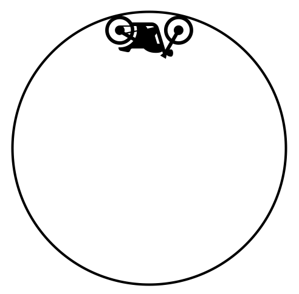
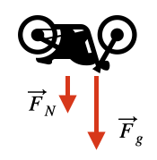

C2.1 Newton’s 2nd Law in Polar Coordinates#
C2.1.1 Newton’s 2nd Law in Polar Coordinates#
Newton’s 2nd law on a point particle states that
In 2D cartesian coordinates we split that into components:
and analyzed each components to obtain our answers.
The process is similar in polar coordinates, but instead of \(xy\)-components we use \(r\theta\)-components:
where we used the radial and angular components of acceleration in polar coordinates.
C2.2.2 Special Case: Uniform Circular Motion#
We will here assume uniform circular motion, that is, the object in interest moves in a circular path with constant speed. The consequences are:
The radius of the motion is constant: \(r = R\)
the radial speed and acceleration are zero: \(\dot{r} = \ddot{r} = 0\)
The angular acceleration is zero: \(\ddot{\theta} = 0 \)
Newton’s 2nd law then reduces to
The only acceleration term that survived the assumptions is the centripetal acceleration.
Since \(\dot{\theta} = \omega\) and \(v_{\theta} = R\omega\) where \(v_{\theta}\) is the tangential speed, we can write it in a more useful form as
Example 1
A particle is moving in a uniform circular motion with a speed of 5.0 m/s and a radius of 0.20 m. What is its net acceleration?
Solution
Using polar coordinates, the net acceleration of a particle in uniform circular motion is simply the centripetal acceleration
Example 2
Calculate the net radial force on the end of a 100.0 m (radius) wind turbine blade that is rotating at 0.50 rev/s. Assume the mass is 4.0 kg.
This problem is a slightly modified version from OpenStax. Access for free at https://openstax.org/books/university-physics-volume-1/pages/6-problems
Solution
Since this is uniform circular motion we know that the net angular force is zero and the net radial force is given by
In this case, we are given the angular speed (in rev/s) and it is more suitable to use the following form:
Inserting our numbers in remembering to convert revolutions to radians:
The negative sign simply informs us that the force is directed towards the center of the circular motion.
The net radial force is sometimes called the centripetal force. I find this very misleading as it suggest it is an individual force due to some interaction. It is not an interaction force, it is a net force.
Example 3
The Globe of Death is used in motorcycle stunt shows, where motorcycles ride inside a hollow sphere. The figure below shows a cross-section of such a sphere. As a motorcycle is making a vertical circular motion, what would be the required minimum speed to make such a maneuver in a globe of radius 2.5 m? Ignore friction.
Solution
In princible, this is not a uniform circular motion as the motorcycle is not likely maintain the same speed through out the loop. We can still apply the concept to the instant the motorcycle is at the very top since there is no radial motion and the angular acceleration does not influence the radial motion in this case.
Since we are dealing with N2, we start with a free-body-diagram (the sketch were given in the problem). We have two forces: gravity and normal. The normal force is required to maintain contact between the motorcycle and the sphere.
The reference frame is our polar coordinate system centered at the sphere. The outward direction is positive by default. We then have
Inserting our forces and noticing that both forces are towards the center (negative):
where we used \(F_g = Mg\).
The minimum required speed is the speed at which the normal force is not zero. Setting the normal to zero and solving for the speed tells us that any speeds about that speed will provide contact:
Hence, the speed must be greater than 5.0 m/s.